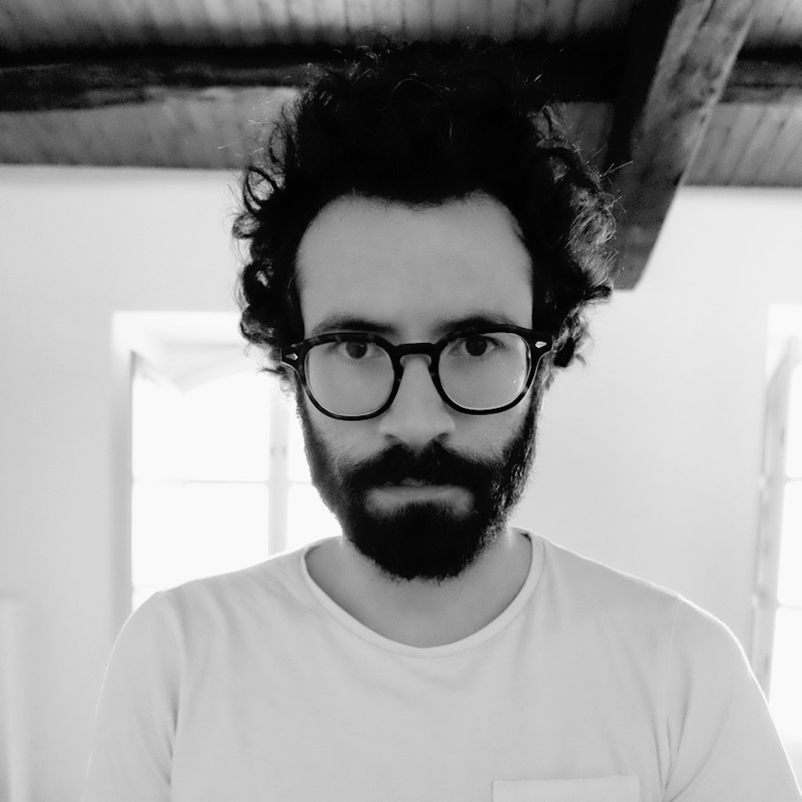

Born and raised in Mallorca. I am engineer and researcher, I hold a Telecommunications Engineering and a MSc on Telecommunications Networks by Universitat Ramon Llull (Barcelona, Spain), where I worked in research projects focused on acoustics, music technologies and human-computer interfaces. After some years working in companies and as a freelance, developing mobile applications for different sectors, I started a PhD by which I combined the design and development of cultural products for a cultural management company with research at the Department of Computer Science and Mathematics and at the Department of Pedagogy in Universitat Rovira i Virgili (Tarragona, Spain), with Dra. Mercè Gisbert and Dr. Jordi Duch.
My doctoral dissertation entitled «Human Behavior Experimentation and Participation in Scientific Activities in the Wild» was focused on the development of participatory platforms within the framework of citizen science and the study of social behavior, applying machine learning techniques to unveil behavioural patterns in topics like climate change or mental health.
I was a visiting researcher at the EECS and the Segal Design Institute where I collaborated with Dr. Haoqi Zhang of Northwestern University (Evanston, Illinois) working on human-centered design in the DTR programme. There, I designed and developed a crowdsourcing platform to study natural patterns. I also visited the Department of Chemical and Biological Engineering (Prof. Luis A. Amaral) improving data science techniques applied to collective and social experiments.
Currently, I am working at the Department of Condensed Matter Physics of Universitat de Barcelona as a part of the research group OpenSystems, as well as Complexity Lab Barcelona and UBICS (Universitat de Barcelona Institute of Complex Systems). I take part in projects such as STEM4Youth, BiblioLab and others, where my work bridges the fields of complex systems, human-computer interaction, citizen science, computational social science, game theory, data science, data visualization and others.

- © Julián Vicens